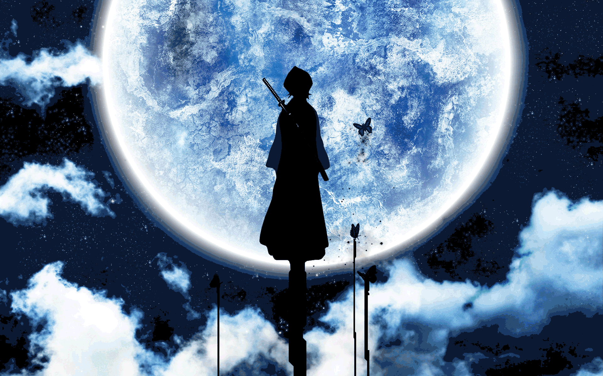
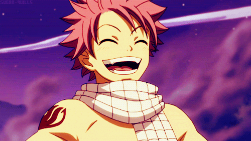
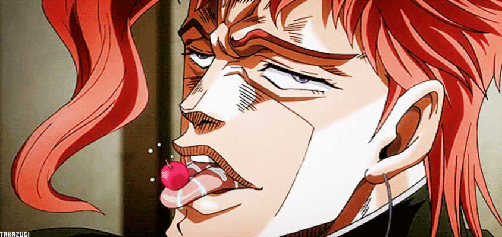

Bleach
Conta a história de Ichigo, um estudante do ensino médio que tem a capacidade de interagir com os espíritos. Mais tarde, ele foi forçado a se tornar um shinigami substituto, logo após absorver involuntariamente a maior parte dos poderes da shinigami Rukia Kuchiki.
Dororo
A trama se desenrola a partir de um acordo que um homem faz com 48 demônios para trocar os órgãos do seu filho recém nascido por domínio no campo de batalha. O bebê é abandonado e encontrado por um curandeiro que dá a ele próteses primitivas. Agora, anos depois, esse bebê, com nome de Hyakkimaru, irá atráz de suas partes do corpo.

Dr.Stone
Conta a história de Senku, um gênio, que renasce 3.700 anos depois que uma luz misteriosa petrifica toda a humanidade. Usando-se de conhecimento científico, ele, junto de seus dois amigos, Taiju Oki e Yuzuriha Ogawa, tentarão restaurar a humanidade.

Hunter x Hunter
O jovem Gon sonha em ser um Hunter (caçador), assim como seu pai, que o abandonou quando ainda era pequeno. Decidido a ir atrás do que deseja, ele tem a chance de fazer um teste físico dificílimo para provar que ele é o melhor Hunter do mundo.

Fullmetal Alchemist: Brotherhood
Edward e Alphonse Elric são dois irmãos alquimistas procurando o catalisador lendário chamado pedra filosofal, um objeto poderoso que lhes permite restaurar seus corpos (que foram perdidos numa tentativa de trazer sua mãe de volta à vida pelo uso da alquimia).

Fairy Tail
A história segue as aventuras de Lucy Heartfilia, uma jovem maga que sonha em se tornar escritora e Natsu Dragneel, um mago adolescente que é membro da popular guilda de feiticeiros Fairy Tail.
Tensei Shitara Slime Datta Ken
Minami Satoru, funcionário de uma grande coorporação, é assassinado e renasce num mundo paralelo. No entanto, algo está diferente: ele renasceu como um slime. Lá ele faz muitos amigos e com suas novas habilidades ele enfrenta diversas batalhas que o deixam entre a vida e a morte.
Assistir 2º temporada (parte 2)

Kumo Desu Ga, Nani Ka
Conta a história de uma menina do ensino médio que reencarnou como uma aranha de masmorra e, agora, luta pela sobrevivência

Vinland Saga
A história ocorre no ano de 1013, onde acompanhamos a jornada de Thorfinn em busca de vingança. Ele trabalha para Askeladd, mas na verdade, seus planos são de um dia desafiar o viking para um duelo e finalmente matá-lo, fazendo assim justiça contra o homem que matou seu pai.

Jojo
JoJo's conta a história da família Joestar, uma família cujos vários membros descobrem que estão destinados a derrubar inimigos sobrenaturais, tais como Dio Brando um vampiro semi-imortal, Yoshikage Kira um serial killer e Diavolo um líder de gangue usando poderes únicos que possuem.
